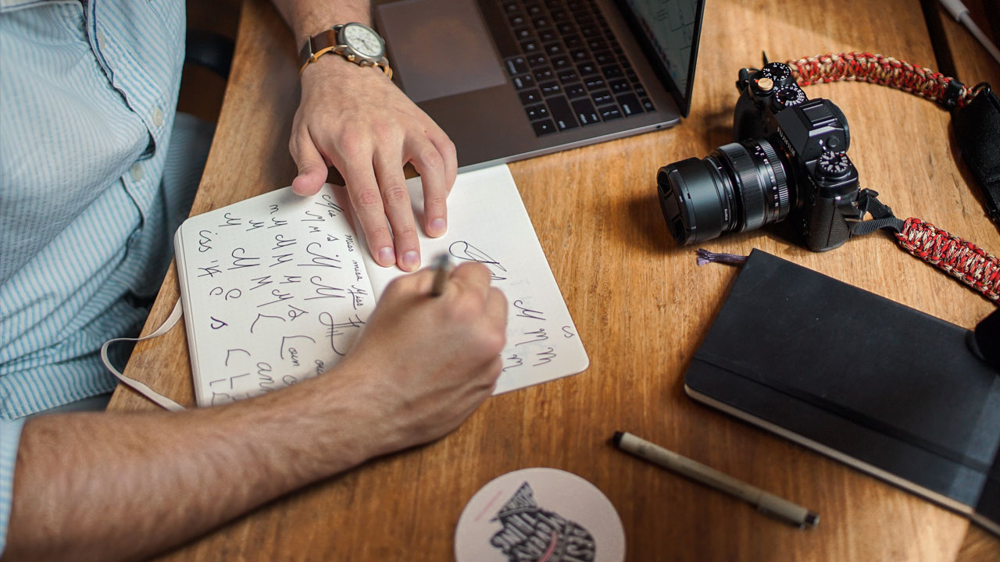
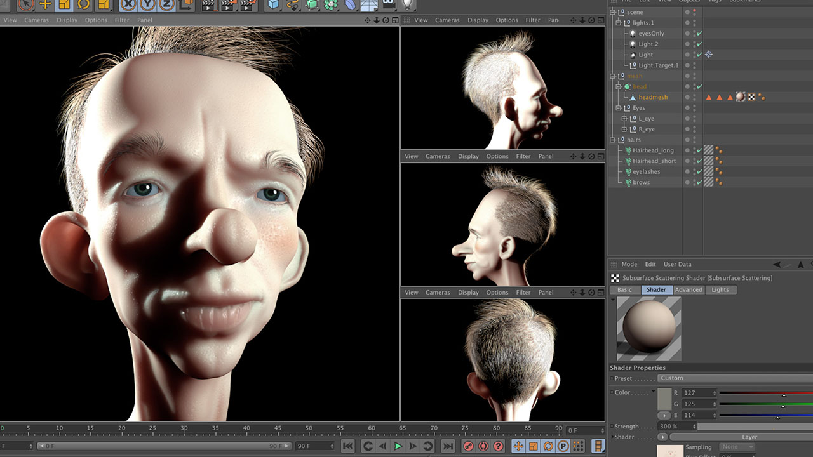
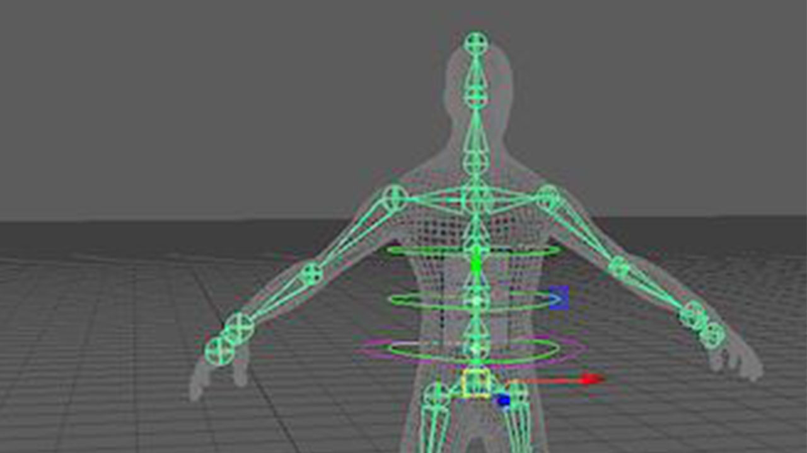
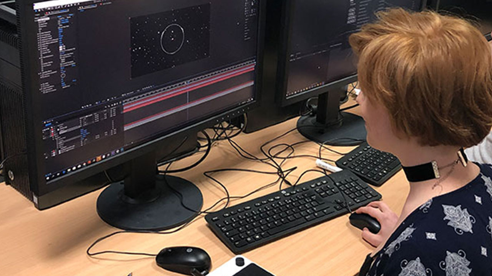

Texturing Artist
La mission principale du texturing artist est la création de textures photoréalistes à mapper sur des objets 3D utilisés.
... lire la suite
Animateur 3D
La mission principale de l’animateur 3D est d’animer des personnages en deux ou trois dimensions .
... lire la suite
Illustrateur
La mission principale de l'illustrateur est de créer et de modifier des images numériques ou des images de synthèses. L’illustrateur 3D est .
... lire la suite
Lighting Artist
La mission principale du lighting artist est de gérer l’éclairage afin de créer des scènes réalistes .
... lire la suite
Auteur-réalisateur indépendant
Généralement, il fait ses 1ères armes sur des courts-métrages qu’il gère de A à Z : il s’occupe des .
... lire la suiteCharacter Designer
Le character designer exprime graphiquement l’identité d’un personnage, à partir d’un scénario .
... lire la suite Compositor
La mission principale du compositor est d’assembler, mélanger plusieurs sources d’images ou d’effets .
... lire la suiteDirecteur artistique
Le directeur artistique 3D est une chef d’orchestre qui donne le tempo, définit l’univers .
... lire la suiteDirigeant de studio 3D
Ce professionnel de la 3D doit s’assurer de la qualité du travail de ses équipes, en traitant .
... lire la suiteGénéraliste 3D et 3D Temps Réel
L’utilisation de la 3D apporte de nombreux avantages : réalisme, émotions,capture d’attention .
... lire la suiteModeleur 3D
Sur la base du dessin d’un personnage par exemple, il va le “sculpter” sur ordinateur .
... lire la suite Previs Artist
La mission principale du previs artist est de permettre à un réalisateur d’expérimenter .
... lire la suiteRendering Artist
La mission principale du rendering artist est coloré, peindre, sculpté et façonné comme .
... lire la suiteRigger
La mission principale du rigger est d’apporter une ossature numérique aux personnages .
... lire la suite Superviseur Animation 3D
Il dirige l’ensemble des étapes de production de l’animation 3D et valide les.
... lire la suite Superviseur des effets spéciaux
En pré-production, il fait le point sur les effets spéciaux qui seront nécessaires.
... lire la suiteSurfacing Artist
La mission principale du surfacing artist est d’ajouter de la texture et .
... lire la suiteTruquiste 2D/3D
Sur son ordinateur, il reçoit les images brutes (prises de vues réelles, séquences .
... lire la suite